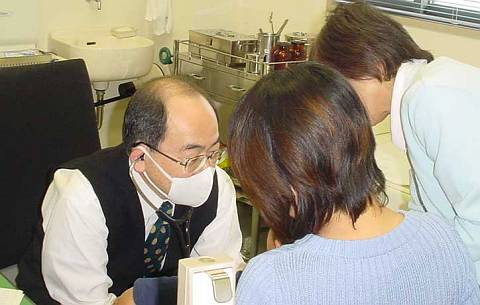
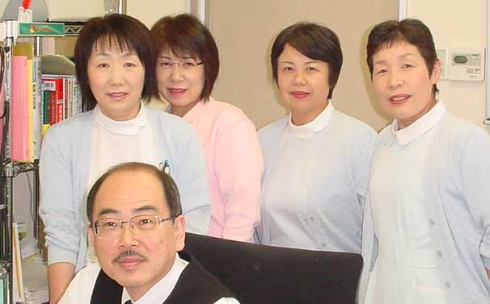
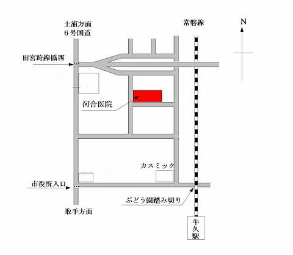

患者さんへの誓い
河合医院の院長および全スタッフは、患者さんがこうして欲しいと考えるサービスを提供することをモットーに、「病気を診るより、人を診る大切さ」に焦点をあてた医療サービスをご提供いたします。
わからない事や疑問がありましたら気軽にお問い合わせください。

診療案内
診療科目
- 内科
- 小児科
- 外科
- 皮膚科（皮膚外科）
- 在宅医療
医師：河合 清、河合 優一郎
発熱外来
診療時間：午前 11:00〜12:00
初めて受診する発熱患者の方でも、受け入れを行っています。
診療時間
| 診療時間 | 日 | 月 | 火 | 水 | 木 | 金 | 土 |
|---|---|---|---|---|---|---|---|
| 9:00〜12:00 | × | × | ○ | ○ | ○ | ○ | ○ |
| 16:00〜18:00 | × | × | × | × | ○ | ○ | × |
- 休診日：日曜・月曜・祝日
診療科目のご案内
皮膚外科診療
当院では、皮膚外科治療（診療・外来手術）を行っております。
- 皮膚・皮下腫瘍（ほくろ、粉瘤、血管腫、脂肪腫 等）の摘出術
- 巻き爪手術
- 眼瞼下垂手術（加齢性、顔面神経麻痺後）
- 外傷（創縫合）、傷跡の修正術
診療日は木曜日午後と土曜日午前（不定期）です。まずは気軽にご相談ください。
小児科診療
外来で10〜15分程度で結果が判る迅速検査キットが増えていますが、当院ではインフルエンザと溶連菌の2種類のみ検査しています。
便を調べるロタウィルス検査は物理的に不可能なこと、またアデノウィルスやRSウィルスは診断がついても根治的な治療がなく対処療法のみとなるためです。保育園などで診断が必要な場合は、検査のできる医療機関を受診してください。
予防接種
予防接種専門の時間は廃止し、通常の診療時間中に予防接種を行います。風邪などの患者さんと同席する場合もありますので、ご了解をお願いします。
ワクチンは在庫を用意してありますが、当日の在庫が切れる場合もありますので、来院の際に電話でご確認をお願いします。
スタッフ
河合医院の院長および全スタッフは、患者さんがこうして欲しいと考えるサービスを提供することをモットーに、「病気を診るより、人を診る大切さ」に焦点をあてた医療サービスをご提供いたします。
小児科・河合医院（茨城県牛久市）の体験者レポートが、女性の口コミサイト・ウィメンズパークに掲載されています。小児科探し・体験者レポート

院長プロフィール
昭和61年7月に開院して30年が経ちました。祖父は金沢市で大正3年に小児科医院を開業しています。
大学を卒業して外科の医局に入り、小児外科、消化器外科を学び、徳洲会病院に移ってから消化器内科や小児科や脳外科を手伝い、その院長の勧めに従い、岐阜の朝日大学で形成外科と整形外科を学びました。その際に独学で漢方を勉強し、その後、牛久のクリニックに勤めながら、女子医大で皮膚科の研修を行い開業しました。また、鍼灸の先生と知り合い鍼を教えてもらい外来で行っています。
昭和62年に保険医協会の医療・福祉交流会に参加して牛久の「ふれあいの会」の方達と知り合い、在宅医療や福祉の方に力を入れるようになり、続いています。
アクセス
- 住所
- 〒300-1237 茨城県牛久市田宮3-2-2
- FAX
- 029-872-3986
- 最寄り
- 常磐線 牛久駅から徒歩約5分（駐車場あり）
